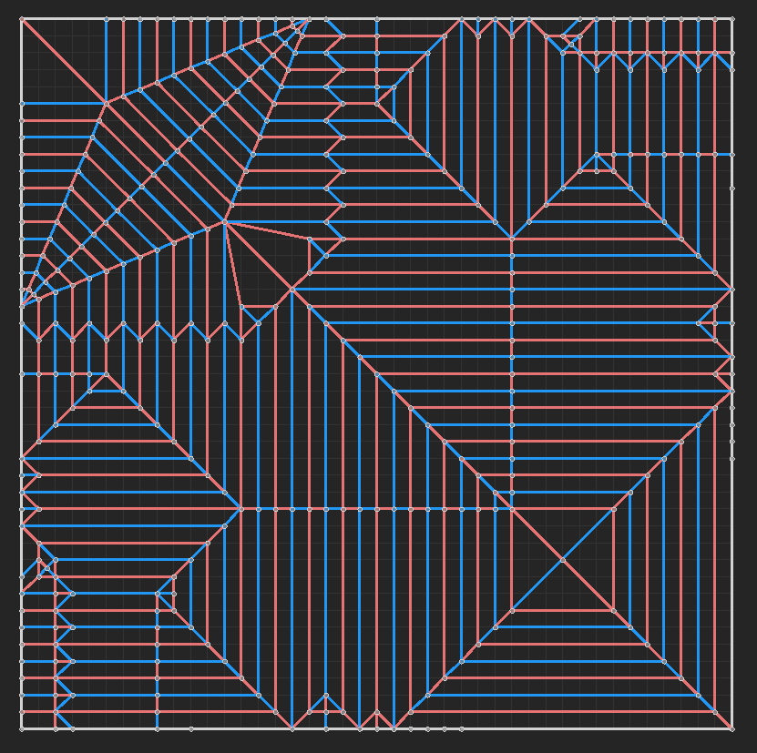

Anisotropic Kuwahara Filter
This post-processing filter was made for the CS50 final project. I had become incredibly interested in graphics programming after watching YouTuber Acerola, and after watching his video on this shader, I wanted to make an implementation in Godot based on his implementation for Unity for my final project.
Using papers linked in Acerola's video alongside information in the video itself and his implementation for Unity URP, I learned the fundamentals of shader programming, the concepts behind the Kuwahara shader, and converted the code in HLSL into a fragment shader in Godot Shading Language (language heavily based on GLSL).
All resources will be linked at the bottom of this page.
The code first convolves pixels with the sobel filter to approximate the partial derivatives and thus gradient of the image. These are then outputted in a structure tensor.
vec4 sobel(vec2 screen_size, vec2 uv)
{
// Calculate Sobel to approximate structure tensor
vec2 d = screen_size.xy;
vec3 sobel_x = (
1.0f * texture(_MainTex, uv + vec2(-d.x, -d.y)).rgb +
2.0f * texture(_MainTex, uv + vec2(-d.x, 0.0)).rgb +
1.0f * texture(_MainTex, uv + vec2(-d.x, d.y)).rgb +
-1.0f * texture(_MainTex, uv + vec2(d.x, -d.y)).rgb +
-2.0f * texture(_MainTex, uv + vec2(d.x, 0.0)).rgb +
-1.0f * texture(_MainTex, uv + vec2(d.x, d.y)).rgb
) / 4.0f;
vec3 sobel_y = (
1.0f * texture(_MainTex, uv + vec2(-d.x, -d.y)).rgb +
2.0f * texture(_MainTex, uv + vec2( 0.0, -d.y)).rgb +
1.0f * texture(_MainTex, uv + vec2( d.x, -d.y)).rgb +
-1.0f * texture(_MainTex, uv + vec2(-d.x, d.y)).rgb +
-2.0f * texture(_MainTex, uv + vec2( 0.0, d.y)).rgb +
-1.0f * texture(_MainTex, uv + vec2( d.x, d.y)).rgb
) / 4.0f;
// Structure Tensor (4x4 matrix)
return vec4(dot(sobel_x, sobel_x), dot(sobel_y, sobel_y), dot(sobel_x, sobel_y), 1.0);
}

{kind=link}
This structure tensor is then blurred to give smoother results and reduce noise in the partial derivatives.
vec4 blur(vec4 tensor, vec2 uv, vec2 d)
{
// Gaussian Blur
int kernelRadius = 5;
vec4 col = vec4(0.0);
float kernelSum = 0.0;
// Blur x pass
for (int x = -kernelRadius; x <= kernelRadius; x++)
{
// Apply gaussian weights to current pixel color multiplied by tensor
vec4 c = tensor * texture(_MainTex, uv + vec2(float(x), 0.0) * d.xy);
float gauss = gaussian(2.0, float(x));
// Return current pixel color multiplied by weight
col += c * gauss;
kernelSum += gauss;
}
// Normalize color
col = col / kernelSum;
// Blur y pass
for (int y = -kernelRadius; y <= kernelRadius; y++)
{
// Apply gaussian weights to current pixel color multiplied by tensor
vec4 c = tensor * texture(_MainTex, uv + vec2(0.0, float(y)) * d.xy);
float gauss = gaussian(2.0, float(y));
// Return current pixel color multiplied by weight
col += c * gauss;
kernelSum += gauss;
}
// Normalize color
return vec4(col / kernelSum);
}

The resulting blurred structure tensor is then used to calculate eigenvectors and eigenvalues to shift an elliptical kernel to align with the "flow" of the image. This results in brush strokes that align with the details of an image rather than uniform square or circle artifacts.
vec4 scaling_factor(vec4 t)
{
// Calculate Eigenvalues
float lambda1 = 0.5 * (t.x + t.y + sqrt(t.x * t.x - 2.0 * t.x * t.y + t.y * t.y + 4.0 * t.z * t.z));
float lambda2 = 0.5 * (t.x + t.y - sqrt(t.x * t.x - 2.0 * t.x * t.y + t.y * t.y + 4.0 * t.z * t.z));
// Calculate and Normalize Eigenvector
vec2 v = vec2(lambda1 - t.x, -t.z);
vec2 n = vec2(0.0, 0.0);
if (length(v) > 0.0)
{
n = normalize(v);
}
else
{
n = vec2(0.0, 1.0);
}
// Angle relative to x-axis of Eigenvector
float phi = -atan(n.y / n.x);
// Scaling Factor
float A = 0.0;
if (lambda1 + lambda2 > 0.0)
{
A = (lambda1 - lambda2) / (lambda1 + lambda2);
}
// Kernel deform factors
return vec4(n, phi, A);
}
These values can then be used to shift the kernel for every pixel as the image is convolved with the Kuwahara filter. The filter splits the ellipse into 8 sectors and, using gaussian weights from the center of the kernel, finds the sector with the lowest standard deviation. This then becomes the color of the pixel. This implementation uses a polynomial approximation rather than a gaussian to calculate the weight of each pixel to improve performance.
vec4 kuwahara(vec2 n, float phi, float A, vec2 d, vec2 uv)
{
// Kuwahara Filter
int radius = _KernelSize / 2;
float a = float((radius)) * clamp((_Alpha + A) / _Alpha, 0.1, 2.0);
float b = float((radius)) * clamp(_Alpha / (_Alpha + A), 0.1, 2.0);
// Displace kernel
float cos_phi = cos(phi);
float sin_phi = sin(phi);
mat2 R = mat2(vec2(cos_phi, -sin_phi), vec2(sin_phi, cos_phi));
mat2 S = mat2(vec2(0.5 / a, 0.0), vec2(0.0, 0.5 / b));
mat2 SR = matrixCompMult(S, R);
// Find kernel radius
int max_x = int(sqrt(a * a * cos_phi * cos_phi + b * b * sin_phi * sin_phi));
int max_y = int(sqrt(a * a * sin_phi * sin_phi + b * b * cos_phi * cos_phi));
// Contrast threshold
float sinZeroCross = sin(_ZeroCrossing);
float eta = (_Zeta + cos(_ZeroCrossing)) / (sinZeroCross * sinZeroCross);
// Initialize weighting matrices
vec4 m[8];
vec3 s[8];
for (int k = 0; k < _N; k++)
{
m[k] = vec4(0.0);
s[k] = vec3(0.0);
}
// Calculate Kuwahara filter weights
for (int y = -max_y; y <= max_y; y++)
{
for(int x = -max_x; x <= max_x; x++)
{
vec2 vec = SR * vec2(float(x), float(y));
// Calculates weight if within shifted radius
if (dot(vec, vec) <= 0.25)
{
vec3 c = texture(_MainTex, uv + vec2(float(x), float(y)) * d).rgb;
c = clamp(c, 0.0, 1.0);
float sum = 0.0;
float w[8];
float z, vxx, vyy;
// Polynomial Weights
vxx = _Zeta - eta * vec.x * vec.x;
vyy = _Zeta - eta * vec.y * vec.y;
z = max(0, vec.y + vxx);
w[0] = z * z;
sum += w[0];
z = max(0, -vec.x + vyy);
w[2] = z * z;
sum += w[2];
z = max(0, -vec.y + vxx);
w[4] = z * z;
sum += w[4];
z = max(0, vec.x + vyy);
w[6] = z * z;
sum += w[6];
vec = sqrt(2.0) / 2.0 * vec2(vec.x - vec.y, vec.x + vec.y);
vxx = _Zeta - eta * vec.x * vec.x;
vyy = _Zeta - eta * vec.y * vec.y;
z = max(0, vec.y + vxx);
w[1] = z * z;
sum += w[1];
z = max(0, -vec.x + vyy);
w[3] = z * z;
sum += w[3];
z = max(0, -vec.y + vxx);
w[5] = z * z;
sum += w[5];
z = max(0, vec.x + vyy);
w[7] = z * z;
sum += w[7];
float g = exp(-3.125 * dot(vec, vec)) / sum;
// Calculates polynomial weight
for (int k = 0; k < 8; k++)
{
float wk = w[k] * g;
m[k] += vec4(c * wk, wk);
s[k] += c * c * wk;
}
}
}
}
// Calculates output color
vec4 output = vec4(0.0);
for (int k = 0; k < _N; ++k)
{
m[k].rgb /= m[k].w;
s[k] = abs(s[k] / m[k].w - m[k].rgb * m[k].rgb);
float sigma2 = s[k].r + s[k].g + s[k].b;
float w = 1.0 / (1.0 + pow(_Hardness * 1000.0 * sigma2, 0.5 * _Sharpness));
output += vec4(m[k].rgb * w, w);
}
// Normalize color output
return clamp(output / output.w, 0.0, 1.0);
}
These passes are combined into a single fragment shader at the end so that they have access to buffer data and so that they work in 3D (Godot does not support multiple buffers for 3D and thus all post process effects can only take data from one screen buffer).
void fragment()
{
vec4 tensor = sobel(SCREEN_PIXEL_SIZE, UV);
vec4 fac = scaling_factor(tensor);
vec4 blur = blur(fac, UV, SCREEN_PIXEL_SIZE);
vec4 output = kuwahara(blur.xy, blur.z, blur.w, SCREEN_PIXEL_SIZE, UV);
COLOR = output;
}
Final render results with differing kernel sizes and demonstrated in 3D


The process of designing origami was very challenging, especially connecting the pieces and getting them to work together in a single square. I debated using a smaller grid and rearranging the arms so that they extending from the opposite corner of the paper and not adjacent to the jaw, but that ended up making the paper too short proportionally with the tail and legs. I hope to update the design so that its more efficient and lies fully flat without internat adjustments, alongside more proportionally accurate as the head in the final design turned out much larger than I had expected in proportion to the rest of the body. However, as my first attempt designing an origami, I'm especially pleased with how it came out in relation to how I had envisioned.